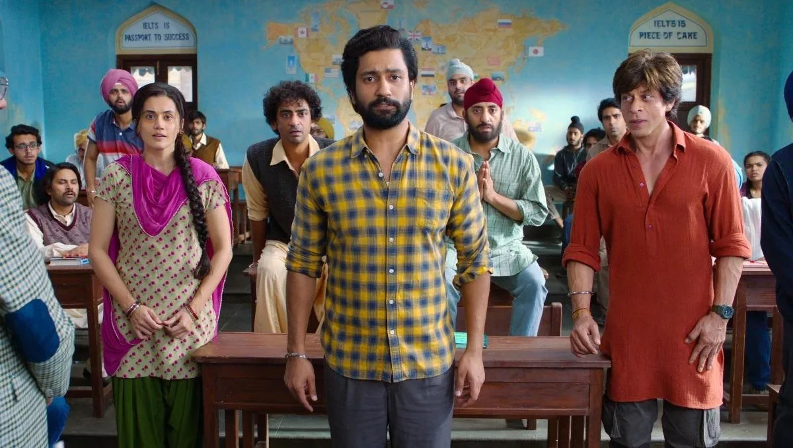
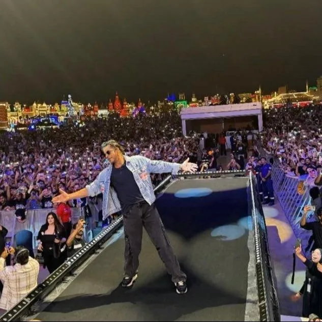

Part V · The Resurrection, 2023 · 27 of 57
Chapter 25 · Dunki: the counterpoint
The third film was the quietest. Rajkumar Hirani’s Dunki is a story of migrants taking the illegal “donkey route” to the West, a film about people who cannot get a visa, made by the most famous Indian face abroad. Its first teaser, “Drop 1”, came out on his 58th birthday, 2 November 2023: the ritual of the gate turned into a release calendar. (Fact. Wikipedia: Dunki; The Quint, 2 Nov 2023) It grossed about ₹454 crore by Sacnilk’s count and ₹470.6 crore by Bollywood Hungama’s. (Fact. same sources) After two films of fire, a film of tears. (Analysis)

Dunki, Drop 4 (2023)
The announcement. The film was announced on Twitter on 19 April 2022, with a title video in which he and Hirani played themselves; his line to the director was “Aap toh Mere Santa Claus nikle”. It was their first film together, after several attempts, and Hirani said Khan had “always been on my wish list”. The tweet dated the release 22 December 2023, twenty months ahead. (Fact. Man’s World India, 19 Apr 2022) Twenty months is the same long lead the birthday gate had always bought: the date was the first piece of marketing. (Analysis)
The clash. In the end Dunki opened on Thursday 21 December 2023, one day before Prabhas’s Salaar: Part 1 – Ceasefire on 22 December. Sacnilk’s day-wise count gave Dunki ₹29.20 crore net in India on its first day and Salaar ₹90.70 crore on its own. (Fact. Sacnilk, 23 Dec 2023) Business Standard’s early report, on Sacnilk’s rough data, put the first day at “over 30 crore” and called it his lowest opening of 2023; both figures are printed here. (Fact. Business Standard, 22 Dec 2023)
The diaspora answered. Abroad the picture turned. Over its first weekend overseas, 22 to 24 December 2023, Dunki took about US$10.31 million (₹85.76 crore), which Bollywood Hungama ranked the fourth-highest overseas opening weekend of 2023 and the sixth-highest of all time in its overseas chart. (Fact. Bollywood Hungama, 26 Dec 2023)
| Market | Opening weekend gross | In rupees | Screens reported |
|---|---|---|---|
| United States | US$2,514,578 | ₹20.92 cr | 686 |
| Canada | US$1,023,963 | ₹8.52 cr | 73 |
| Australia | A$1,337,395 | ₹7.55 cr | 148 |
| United Kingdom & Ireland | £608,240 | ₹6.42 cr | 244 |
| Germany | €275,934 | ₹2.53 cr | 87 |
| New Zealand | NZ$200,509 | ₹1.05 cr | 47 |
| Singapore | S$104,484 | ₹0.66 cr | 13 |
| Malaysia | MYR 350,729 | ₹0.63 cr | 27 |
(Fact. Bollywood Hungama, 26 Dec 2023; markets sorted by rupee value; the source notes that some screen counts are partial)
A film about people who cross borders without papers earned its strongest welcome among the families who had crossed with them: Canada, on 73 screens, nearly matched Australia on 148. (Analysis) The film reached Netflix on 15 February 2024, which fans greeted as a Valentine’s Day gift. (Fact. ETV Bharat, 15 Feb 2024) At home it lost the opening to a louder film; abroad, and then on the small screen, the quiet film kept selling. (Analysis)
From the Final Thesis
Added from the Final Thesis, word for word. Where a figure here differs from the sourced figure earlier in this chapter, the chapter’s figure stands; see Addendum B.
DUNKI: the return to storytelling, emotion, and the global audience
Dunki introduced a different rhythm.
The campaign’s “Drop” format turned the release of promotional content into a continuing sequence. The first drop was released on Khan’s birthday, November 2, 2023, and was followed by song releases, the trailer, and further promotional material.
The official Red Chillies Entertainment channel described the first drop as the introduction to the film’s world and its journey of friendship, dreams, and home.
Dunki’s Dubai promotional event also extended the campaign into a major international setting, connecting the film’s emotional and migration-related themes with an audience beyond India.
(Final Thesis, section 10)
What Dunki adds
Dunki demonstrates that the 2023 resurgence was not exclusively built around action, spectacle, or a single screen persona. It also worked through:
- Episodic content releases.
- The combination of music, emotional storytelling, and star communication.
- International promotional events.
- The contrast between Jawan’s mass-action identity and Dunki’s human and emotional narrative.
Together, Pathaan, Jawan, and Dunki created a three-film year with distinct genres and campaign identities.

The open arms in Dubai for Dunki. (Images: Final Thesis archive)
The larger change: in 2013, digital technology was a mechanism through which audiences helped construct a campaign experience. In 2023, the film, the star, and the controlled release of content were themselves the principal event.
That is a striking evolution in marketing power, even if it is not the same kind of innovation.
(Final Thesis, section 10)
Dunki: Storytelling as a sequence of digital moments
The Dunki promotional campaign used a sequence of content releases known as Dunki Drops, turning the release of promotional material into a continuing narrative.
This is a familiar technique in contemporary entertainment marketing: a film’s story is introduced through a succession of moments, each designed to generate attention and anticipation for the next.
The approach creates continuity within the campaign.
The larger opportunity would be to create continuity beyond the campaign — a fan relationship that does not have to restart with each new film.
(Final Thesis, section 46)
Dunki: A different register
Dunki followed with a different genre and creative partnership: Shah Rukh Khan and director Rajkumar Hirani, in an emotional story involving migration and belonging.
Its reported worldwide gross was lower than those of Pathaan and Jawan, but it remained a substantial theatrical release in the same calendar year.
The three-film sequence demonstrates that the 2023 story was not confined to a single action-film identity.
It encompassed action spectacle, multi-character performance and a different emotional register.
The research question is whether this represented a deliberate diversification of the star’s public-facing brand, a consequence of the projects themselves, or a combination of creative and commercial factors.
The available public data cannot establish a single cause.
(Final Thesis, section 62)